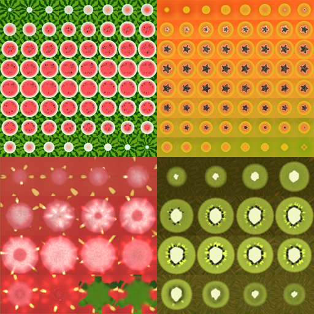

Fruit Measuring Game
Fruit Measure is a game I developed as part of a Snapchat content creator program. The goal was to develop expiremental augmented reality experiences. My concept was to take an AR experience users are already familiar with, (iOS measure tool) and gamify it. The game is pretty simple, measure things and guess their length in a randomly assigned fruit.
The models were purchased due to a short project time. Since it's possible to have decimal measurments, I developed a sliced fruit shader using flipbook textures of the fruit crossections. These were rendered in blender using booleans to slice the model and some custom shaders to generate a cross section material.
